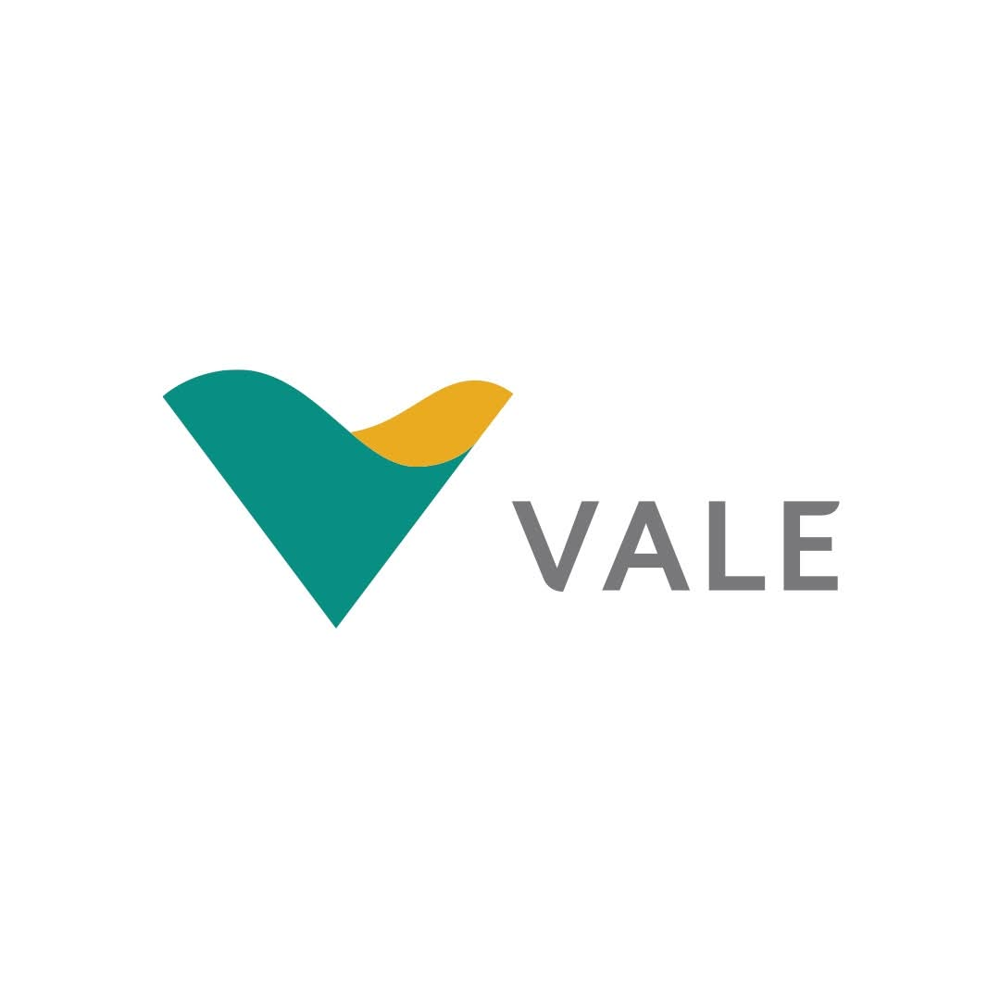
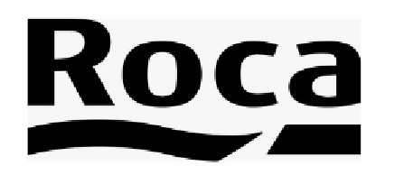
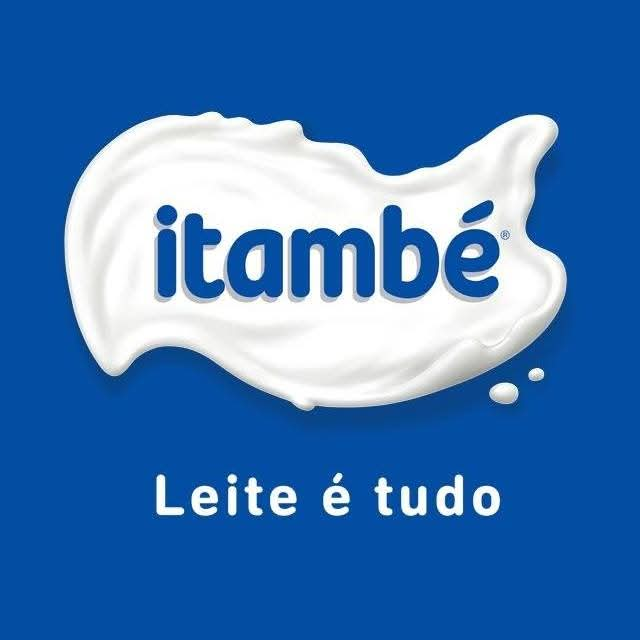
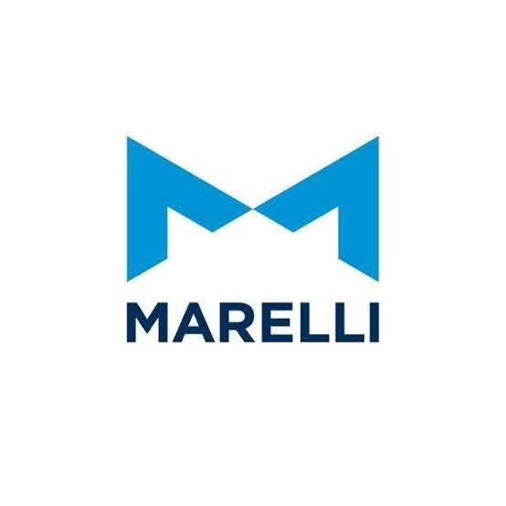
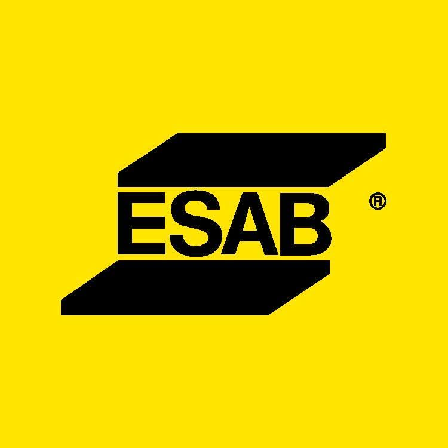
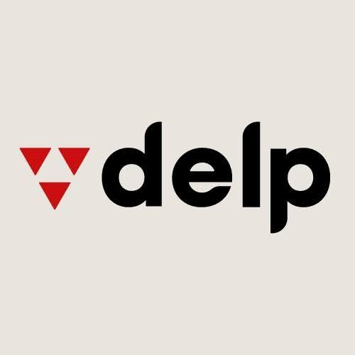
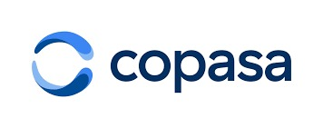
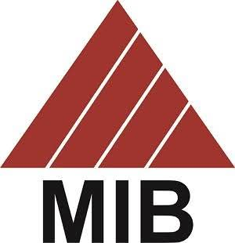
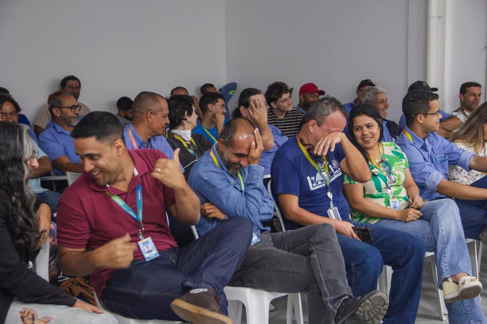

Teatro empresarial para SIPAT, RH e CIPA
Sua SIPAT pode prender atenção do começo ao fim.
Com o ator Glaydson de Paula, temas como segurança, meio ambiente, saúde e comportamento chegam à equipe com humor, interação e mensagem clara.
Empresas e instituições que já receberam ações cênicas








Para quem contrata
Uma solução para quem precisa comunicar temas sérios sem perder a equipe no meio do caminho.
Campanhas internas com mais adesão
Use personagens, humor e interação para reforçar cultura, saúde mental, convivência, respeito e integração.
SIPAT e prevenção com linguagem acessível
Leve temas técnicos para o cotidiano dos colaboradores, com cenas que conectam risco, atitude e responsabilidade.
Programação presencial de alto envolvimento
A intervenção acontece no auditório, refeitório, escritório ou área operacional, respeitando a estrutura da empresa.
O que muda na prática
A mensagem chega com humor, mas o recado fica.
O Teatro Empresarial troca a exposição longa por personagens e cenas que aproximam o tema da realidade da equipe. Isso cria atenção, participação e memória, especialmente em ambientes onde a rotina é intensa.
Ver registros reais
Presencial e adaptável
Auditórios, refeitórios, escritórios e áreas produtivas.
O que sua empresa pode contratar
Intervenções cênicas para treinamentos, campanhas e semanas corporativas.
Palestra cênica para SIPAT
Apresentação presencial com personagens, interação e mensagem alinhada ao tema da semana.
Intervenção no ambiente de trabalho
Ação rápida e direta no local onde o time já está, sem grandes deslocamentos internos.
Campanhas de conscientização
Conteúdo para meio ambiente, saúde, segurança, assédio, direção defensiva e comunicados internos.
Temas mais solicitados
Assuntos essenciais tratados com clareza, presença e linguagem humana.
Segurança do Trabalho e SIPAT
Uso correto de EPIs
Meio Ambiente e descarte de materiais
Saúde alimentar
Assédio moral e sexual
Depressão e ansiedade
Direção defensiva
Endomarketing e informes internos
Como funciona
Da conversa inicial à apresentação, tudo é pensado para caber na rotina da empresa.
Briefing pelo WhatsApp
Você informa tema, cidade, local, quantidade de colaboradores e formato desejado.
Ajuste da abordagem
O roteiro e os personagens são direcionados para o objetivo da campanha ou SIPAT.
Apresentação presencial
A equipe recebe uma intervenção leve, participativa e conectada ao dia a dia do trabalho.
Registros reais
Fotos que mostram o serviço em ação: empresas, fábrica, auditório e equipes.
Clientes e credibilidade
Experiência com empresas industriais, instituições, hospitais, construtoras e órgãos públicos.
Também há histórico com ArcelorMittal, Gerdau, General Electric, Minas Tênis Clube, hospitais, construtoras, escolas técnicas e outras organizações.
Depoimentos
Feedbacks que reforçam o principal: engajamento, clareza e reflexão.
“Para o encerramento da 21ª SIPAT do Hospital Belo Horizonte, convidamos o ator Glaydson de Paula. Não foi só uma peça de teatro, foi um espetáculo. Foram momentos de alegria e descontração de todos que participaram. O ator é completo, muito carismático. Rimos muito e adoramos.”
Paula Santana, Presidente da CIPA 2009 do Hospital Belo Horizonte“Foi boa a intervenção cênica, pois de forma lúdica se tem uma melhor transmissão do recado dado e as pessoas se divertem e interagem melhor.”
Colaborador da Vale“Muito criativo. Uma maneira diferente, inteligente e engraçada que nos faz refletir sobre a importância de cuidar da natureza.”
Colaborador da Vale“Forma divertida e inusitada de passar informação ambiental para os funcionários, gerando sinergia, interação e integração entre as áreas.”
Mina de Fábrica Nova“O objetivo foi totalmente atingido de uma forma lúdica, engraçada e que, além da mensagem, proporcionou um agradável momento de descontração.”
Cliente de SIPATTrajetória
Personagens, mídia e repertório artístico por trás das ações corporativas.
Os personagens e materiais de divulgação fazem parte de uma caminhada artística que fortalece a presença cênica nas empresas. Eles entram como recurso para tornar campanhas mais vivas, próximas e memoráveis.
Dúvidas comuns
Informações que ajudam RH, CIPA e Segurança a decidir.
Precisa de palco?
Não necessariamente. A apresentação pode acontecer em espaços simples, como auditórios, refeitórios, escritórios ou áreas operacionais seguras.
O conteúdo é ajustado?
Sim. A abordagem é direcionada ao tema, ao perfil da equipe e à realidade da empresa.
Como pedir orçamento?
O melhor caminho é enviar pelo WhatsApp o tema, cidade, data estimada, público e local da apresentação.
Próximo passo
Quer levar uma palestra cênica para sua empresa?
Chame no WhatsApp e informe tema, cidade, quantidade de participantes e período desejado. A partir disso, o Teatro Empresarial orienta o melhor formato para sua ação.